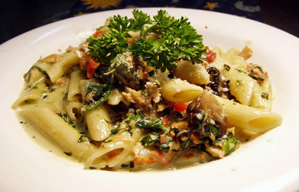

Our History
The Kappock Caffe has been in the Riverdale area for the past 8 years. Its owners, Cosmo and Peter, wanted to create a small diner with good food in Knolls Crescent.They have been living in the Riverdale area for the past 30+ years and have owner three restaurants together, one of which is Cafe Blue located on Johnson Avenue.Peter and Cosmo have been striving to create a decent Italian meal which is affordable for those living within the Knolls Cresecent area.They strive to make changes daily to the menus and have recently began adding Romanian food on the daily dinner specials.Their daughters, Cornelia and Nicole, look forward to serving you! The Kappock Caffe is 100% a family friendly restuarant and 100% ran by family members along with family friends.

Please come and "TASTE THE DIFFERENCE"!